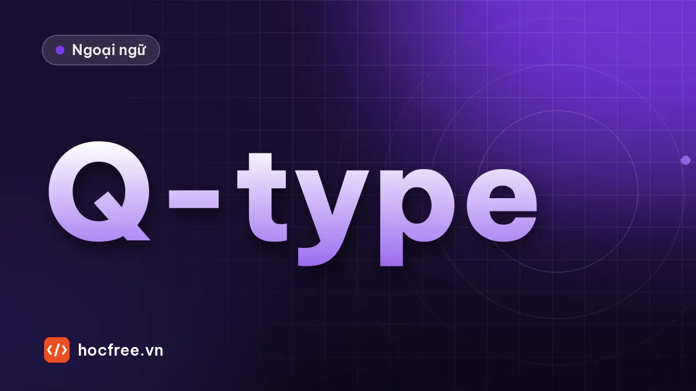

TOEIC Part 7: 6 dạng câu hỏi và cách tìm đáp án
Câu ý chính, chi tiết, suy luận, NOT true, ý định người viết và mục đích: nhận dạng qua câu chữ và quy trình tìm đáp án riêng cho từng dạng.

Học xong bài này, bạn sẽ
- Nhận ra 6 dạng câu hỏi qua câu chữ
- Áp dụng cách tìm đáp án riêng cho từng dạng
- Xử lý câu NOT true và câu suy luận
Nên học trước: Skimming, scanning và đọc câu hỏi trước
Nội dung bài viết
Câu hỏi Part 7 trông rất đa dạng, nhưng thực ra chỉ thuộc vài dạng lặp đi lặp lại. Mỗi dạng có cách tìm đáp án riêng. Nhận ra dạng câu hỏi ngay khi đọc giúp bạn biết phải tìm ở đâu và đọc kỹ đến mức nào, thay vì đọc lại cả bài cho mỗi câu.
Dạng 1: mục đích, ý chính
What is the purpose of the e-mail? Why was the notice written? What is the article mainly about?
- Tìm ở đâu: tiêu đề, dòng Subject, 1–2 câu đầu. Câu chứa I'm writing to…, This is to inform you…, We are pleased to announce…
- Bẫy: đáp án nói về một chi tiết có thật trong bài nhưng không phải mục đích chính.
- Mẹo: với email dài, làm câu này sau cùng, khi bạn đã hiểu cả bài.
Dạng 2: chi tiết
When will the event take place? How much does the service cost? Who is Mr. Lim?
- Tìm ở đâu: scan từ khóa trong câu hỏi (xem skimming và scanning).
- Bẫy: bài có nhiều con số, ngày giờ; đáp án sai dùng số khác trong bài.
- Mẹo: đọc kỹ câu chứa từ khóa, vì có thể có điều kiện đi kèm: "after May 5", "except Sundays".
Dạng 3: suy luận
What is suggested about the company? What can be inferred about Ms. Ha? Who most likely is the intended audience?
- Dấu hiệu: suggested, implied, inferred, most likely, probably.
- Cách làm: đáp án đúng không viết thẳng trong bài nhưng phải có bằng chứng rõ. Với mỗi đáp án, hỏi: "Câu nào trong bài chứng minh điều này?" Không tìm được câu chứng minh thì loại.
- Bẫy: đáp án nghe hợp lý theo kiến thức thông thường nhưng bài không nói tới; đáp án suy diễn quá xa.
…Ms. Dao will be leaving the Hanoi branch at the end of the month to lead our new office in Singapore. We thank her for six years of excellent service…
What is suggested about Ms. Dao? (A) She is retiring. (B) She has been promoted. (C) She is moving to a competitor. (D) She started working in Singapore six years ago.
Xem đáp án
(B) – to lead our new office cho thấy cô được giao vị trí cao hơn trong cùng công ty. (A), (C) không có bằng chứng; (D) sai: 6 năm là thời gian ở chi nhánh Hà Nội.
Dạng 4: NOT / TRUE
What is NOT mentioned as a benefit? What is true about the product? What is indicated about the hotel?
- NOT: ba đáp án có trong bài, một đáp án không có. Cách làm: dò từng đáp án, gạch những đáp án tìm thấy. Đáp án còn lại là đáp án đúng.
- TRUE / indicated: ngược lại, chỉ một đáp án đúng với bài.
- Thời gian: đây là dạng tốn thời gian nhất vì phải dò 4 lần. Nếu đang gấp giờ, hãy làm dạng này sau cùng trong mỗi bài.
Dạng 5: ý định người viết trong tin nhắn chat
At 10:15, what does Mr. Vu most likely mean when he writes, "I'm on it"?
- Giống câu hỏi ý định ở Part 3: đọc tin nhắn ngay trước và ngay sau câu trích dẫn.
- Các cụm hay gặp: I'm on it (tôi đang làm ngay), Sounds good (đồng ý), That's a relief (nhẹ nhõm), No problem (sẵn lòng), Not yet (chưa), Tell me about it (tôi cũng thấy vậy).
Dạng 6: yêu cầu, việc tiếp theo
What is Mr. Bao asked to do? What will the company do next month?
- Tìm ở đâu: thường ở phần cuối bài, sau các cụm Please…, We ask that…, Be sure to…, Could you…
- Bẫy: đáp án nêu một việc người khác (không phải người được hỏi) sẽ làm.
Bảng tóm tắt
| Dạng | Từ nhận dạng | Tìm ở đâu | Thời gian |
|---|---|---|---|
| Mục đích | purpose, mainly, why was … written | Đầu bài | Nhanh |
| Chi tiết | When, Where, How much, Who | Scan từ khóa | Nhanh |
| Suy luận | suggested, inferred, most likely | Nhiều chỗ, cần bằng chứng | Trung bình |
| NOT / TRUE | NOT, true, indicated, mentioned | Dò từng đáp án | Chậm |
| Ý định (chat) | "…" mean when he writes | Tin trước và sau | Trung bình |
| Yêu cầu, việc tiếp theo | asked to, will … do | Cuối bài | Nhanh |
Bài tập
From: Duc Nguyen, Facilities Manager
To: All staff, Building B
Subject: Air conditioning maintenanceDear colleagues,
The air conditioning system in Building B will be serviced this Saturday, October 25. Technicians from CoolAir will replace the filters and check all units. The work will begin at 7 A.M. and should be finished by noon.
Employees who need to work on Saturday are asked to use the meeting rooms in Building A, which will be open from 7 A.M. to 6 P.M. Please note that the cafeteria in Building B will also be closed that day. Before you leave on Friday, please make sure that all windows in your area are closed and that no items are left on the floor near the air conditioning units.
Thank you for your cooperation.
1. What is the purpose of the e-mail? (A) To announce a new cafeteria (B) To inform staff about maintenance work (C) To introduce a new supplier (D) To change working hours
2. What is suggested about CoolAir? (A) It is located in Building A. (B) It provides air conditioning services. (C) It will close on Saturday. (D) It hired new technicians.
3. What is NOT mentioned about Saturday? (A) The cafeteria in Building B will be closed. (B) Meeting rooms in Building A will be available. (C) Filters will be replaced. (D) Parking will be limited.
4. What are employees asked to do on Friday? (A) Work in Building A (B) Contact the technicians (C) Close windows (D) Clean the cafeteria
Xem đáp án và giải thích
- B – dòng Subject và câu đầu (dạng mục đích).
- B – Technicians from CoolAir will replace the filters → công ty này cung cấp dịch vụ điều hòa (dạng suy luận có bằng chứng).
- D – A, B, C đều có trong bài; bãi đỗ xe không được nhắc (dạng NOT).
- C – Before you leave on Friday, please make sure that all windows… are closed. (A) là việc của thứ Bảy, bẫy sai thời điểm.